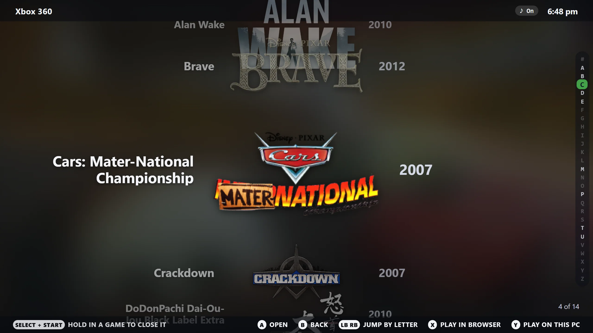

Analiza tus carpetas donde están
Indícale las carpetas que ya tienes. Los archivos se catalogan donde están y nunca se mueven, renombran ni eliminan, y un archivo defectuoso nunca detiene un análisis.
Gratis · código abierto · autoalojado
game-sauce cataloga los juegos que tienes, obtiene las carátulas, ejecuta muchos de ellos en tu navegador, inicia el resto en los emuladores de tu PC y lleva toda la biblioteca a la tele con una Pantalla grande que se maneja con mando.
Windows · macOS (Apple silicon) · Linux · Docker, Unraid y Proxmox · Raspberry Pi
Las capturas usan datos de demostración incluidos, con carátulas generadas.
Un solo lugar para la biblioteca de toda la casa, en una máquina que controlas tú.
Indícale las carpetas que ya tienes. Los archivos se catalogan donde están y nunca se mueven, renombran ni eliminan, y un archivo defectuoso nunca detiene un análisis.
Carátulas, descripciones, años y más desde ScreenScraper, TheGamesDB, IGDB y SteamGridDB con tus propias cuentas, o importa imágenes desde carpetas y sube las tuyas.
Muchas consolas antiguas funcionan directamente desde una página web, con estados guardados y partidas del juego conservados por persona en tu servidor. Una fila de «Seguir jugando» recuerda dónde lo dejaste.
Un clic inicia un juego en el emulador instalado en tu propio ordenador, como RetroArch, MAME o Dolphin. Los juegos se pueden conservar para relanzarlos rápido, y una página de configuración ajusta cada emulador.
Una vista a pantalla completa, manejada con mando, para el sofá: una rueda de juegos con logotipos y rótulos, favoritos y colecciones, una barra de la A a la Z, manuales en pantalla y sonidos que puedes silenciar.
Favoritos, colecciones privadas y juegos ocultos, además de cuentas para las personas de confianza, incluidas cuentas de solo jugar sin descargas ni administración. Las personas pueden enviarse mensajes privados, y el administrador puede publicar un aviso para todos.
Verifica volcados con los DAT de No-Intro y Redump, encuentra versiones duplicadas y sugiere la mejor copia que conservar, y limpia los archivos de imágenes sin usar, sin eliminar tus juegos.
Trae tu biblioteca de Steam con las horas que has jugado, y tus juegos de PlayStation, Nintendo y Xbox desde una lista. Registra también los discos y cartuchos que tienes físicamente, todo junto a tus ROM.
Sin cuenta, sin suscripción y sin nube. Tu biblioteca y sus datos se quedan en tu hardware, en una base de datos de la que puedes hacer copias y restaurarla desde la aplicación.
Dos clips cortos de la biblioteca de demostración incluida.
Una vista a pantalla completa pensada para un mando y un sofá. Ábrela desde la Biblioteca con un clic, y pon el navegador o la aplicación de escritorio a pantalla completa en la tele.


Una estantería de carátulas a pantalla completa en un arco suave. Elige una familia y una plataforma, desplázate con las flechas, la rueda del ratón, un deslizamiento o un mando, y pulsa jugar.
Cataloga los juegos en caja de tu estantería real, a mano o desde una lista, junto a tu colección digital. Cada persona tiene su propia estantería.
Mensajes privados entre las personas de tu servidor y avisos del administrador. Nada sale de tu propia máquina.

Aspectos Clásico y Moderno, claro y oscuro. La misma biblioteca, a tu gusto.


Elige el que más te convenga. Cada uno lleva unos minutos.
Descarga la aplicación de escritorio o la versión portátil para Windows, macOS o Linux. Nada más que instalar: sin servidor, sin Docker, sin ajustes que editar.
Descargar la última versiónEjecútalo con Docker, en Unraid o en un contenedor de Proxmox, y úsalo desde todos los dispositivos de casa. La guía de despliegue tiene los pasos.
Leer la guía de despliegueLa primera vez que arranca, se muestra una sola vez la cuenta que se creó para ti. Anótala y cambia la contraseña en Ajustes. Si lo expones a internet, ponlo detrás de una VPN o de un proxy inverso con HTTPS.
No. game-sauce sirve para gestionar los juegos que ya tienes. No incluye ni suministra juegos ni archivos BIOS, y no descarga juegos por ti: tú traes tu propia colección. Para jugar, el juego en el navegador funciona con EmulatorJS, un emulador de código abierto que tu navegador carga al pulsar Jugar. Para jugar en tu PC, la página Emuladores recomienda emuladores y enlaza dónde conseguirlos, y el lanzador inicia los que instalas tú mismo.
Sí. Es de código abierto bajo la licencia MIT. No hay que crear cuenta, ni suscripción, ni seguimiento. Algunos proveedores de metadatos te piden registrarte con tu propia cuenta gratuita para usar su servicio.
Muchas consolas antiguas que no necesitan BIOS funcionan desde una página web. Los sistemas más nuevos, y todo lo que necesita más de lo que un navegador puede ofrecer, se inician en cambio en un emulador de tu PC mediante el lanzador.
No en las carpetas que le indiques. Los lee donde están y nunca mueve, renombra ni elimina los archivos que contienen. Las herramientas de limpieza solo tocan imágenes y archivos que game-sauce guardó él mismo.
Sí. Crea cuentas para las personas de confianza. Las colecciones son privadas de quien las creó, y las cuentas de solo jugar ven únicamente los juegos que se pueden jugar en el navegador.
Abre una incidencia o una discusión en GitHub, o escribe a hello@gamesauce.app. La página Estado del sistema en Ajustes genera un informe para copiar y pegar sin ningún secreto.
game-sauce es gratuito y de código abierto. Si te resulta útil, puedes invitarme a un café. Me ayuda a dedicar más tiempo a nuevas funciones, a probar en Windows, Mac y Linux, y a responder preguntas.